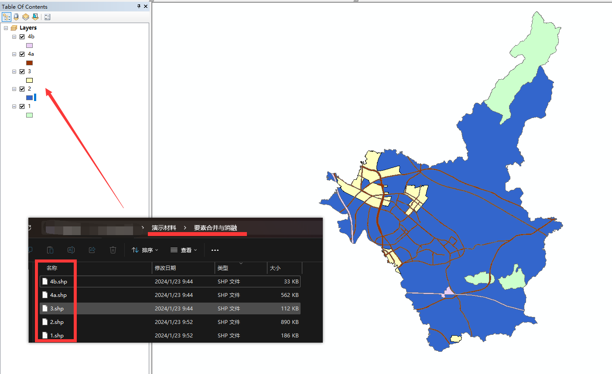
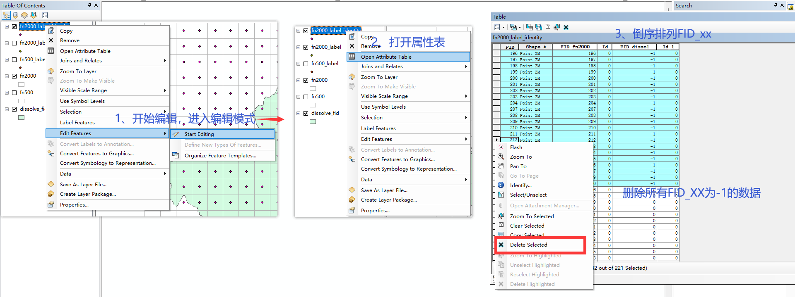

工具
要素合并与消融
0、导入数据

导入 "演示材料/要素合并与消融/" 文件夹的shp文件
1、要素合并 Merge
- 在工具栏的Geoprocessing中可以找到Merge，或者在Search中搜索Merge（Data Management）,点击打开Merge合并工具
- 选择Input Datasets(要合并的图层)，然后选择保存路径。
打开属性表，可以发现原来的图层中没有的字段会变成0或null
2、要素消融 Dissolve
- 在工具栏的Geoprocessing中找到Dissolve或者直接搜索Dissolve（Data Management）
- 选择merge 和保存路径， 选择Dissolve Field(s)，如果只选FID，则全部都消融为一条数据。
Merge 和 Dissolve的区别是Merge是将多个Layers合并为一个Layers， Dissolove 可以将一个Layers中的多条(n条)数据按某一个字段消融为一条或多条(m条, m<=n)数据。
网格绘制
0、导入数据
- 使用上一节中按FID消融的图层作为模板，导入此图层
1、调整参考坐标系
- 在空白处右键->Data Frame Properties
- 点击Coordinate System, 这里网格按米为单位，选择CGCS2000坐标系
一步一步找：Projected Coordinate Systems > Gauss Kruger > CGCS2000 > CGCS2000 3 Degree GK CM 114E， 或者直接搜索CGCS2000
右键Copy and Modify, 自定义一个中心经线为110度的投影坐标系，修改名称和Central Meridian后确定。
中心经线根据实际需要进行修改。
- 添加常用的坐标系到喜爱，确定修改坐标系
2、创建网格 Create Fishnet
- 打开工具栏中的Windows - Catalog， 在System Toolboxes > Data Management Tool.tbx 中找到Sampling > Create Fishnet
- 设置Create Fishnet参数
- 生成网格和中心点
3、删除不在模板上的点
重新创建了一个网格大小为2000的网格，原来500的太密集了
- 打开System Toolboxes > Analysis Tools.tbx中的Overlay > Identity工具，选择Input为中心点，Identity为模板，选择保存路径后确定
- 删除不在模板上的点

- 删除后的结果
删除后需要停止编辑
没有Editor时，在Cutsomize-Toolbars中打开
4、计算中心点的84坐标系
- 将坐标系修改为WGS 1984
- 计算经纬度
- 导出结果
- 查看导出的csv文件